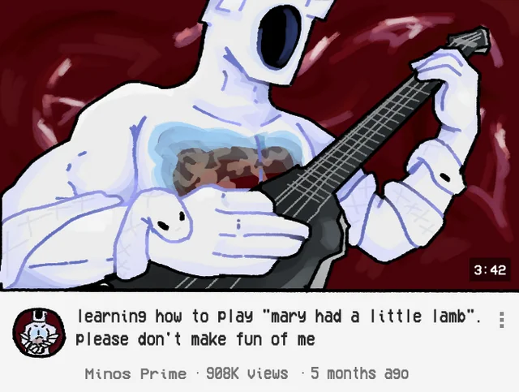
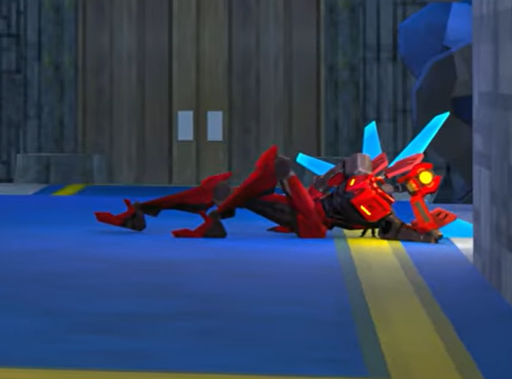
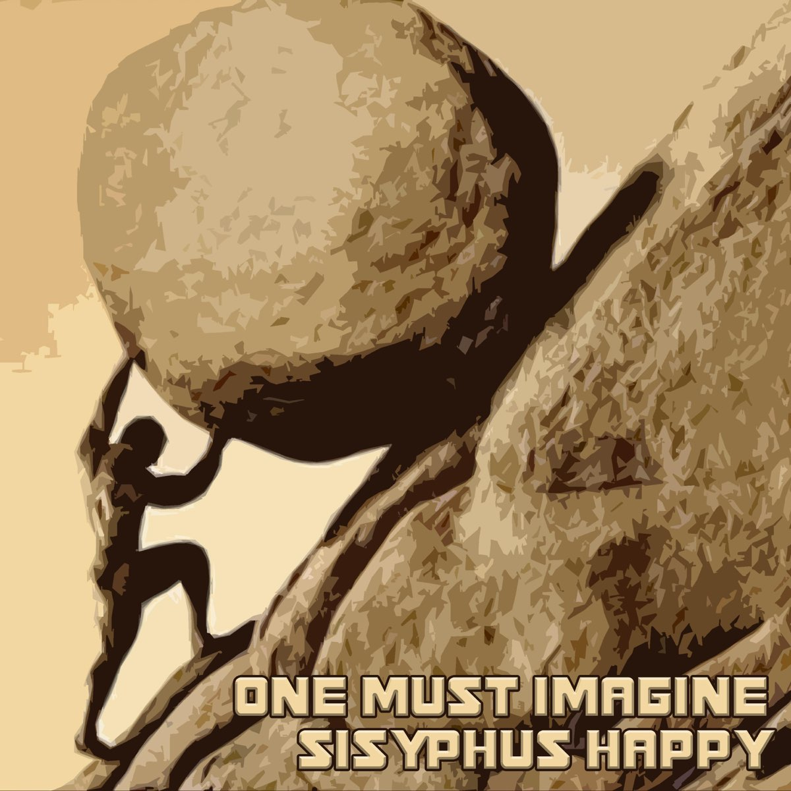

Intro
Ok so uhm this isnt an English test/essay so ill just get right to it. Ultrakill was a game made a few years by
Arsi "Hakita" Patala. This game is autistic as hell and playing it feels like being dosed by 5kg of ketamine
shoved directly through your retinas, and thats what makes it a good game. Valerian decided to get this game a few
months ago, and one day at Galih's house, he conveniently had the game in his USB and thats kinda how the group
started playing Ultrakill
On a side note the community is even more autistic and I cannot Unsee Minos Prime eating a chicken wing
Im annoyed by the fact the image height is longer than this paragraph so ill keep going. So uhm, the game's physics
makes no sens 110% of the time like shooting coins, punching your bullets to make them explode, your character
is 150% elastic, oh and hell has conveniently placed elevators through each layer

Story
So in this timeline, WW1 never ended. Instead of ending after like a few years, it lasted over 200years. Over time, machines
are created to further this endless tide of desparity, but a major leap in technology happened when Nikola Tesla invented
fuel using blood (trust me bro). And so the first "supreme machines" were made.
Nearing the end of the war, the machines grew so big they consumed more resources than America, and eventually Earth became
a wasteland and even the sun couldnt pass through the thick ashen skies. So a smarty pants came and said "hey lets be friends"
and they all lived happily ever after.
Ok since the game isnt even finished yet we dont know what happened between that period to the next one, but basically due
to running outa resources people started going to hell for resources. Ah yes the classic minecraft/terraria/doom slayer plot.
But anyways while that happened, a guy named minos, a denizen of the lust layer of hell said that "Ayo maybe we shouldnt be
punished for all eternity in hell just for loving someone else" then this angel Gabriel said haha sword goes swing swing.
Somewhere else in hell a guy named Sisyphus started a riot but Gabriel didnt like this either and gave him the Salamah treatment.
Fast forward some years later, the machines broke out of hand, dunno why since the game is unfinished. You play as a sentient
spider monkey GoPro who needs blood as fuel to live so you killed everyone on Earth, then went to hell to kill everyone twice.
Along the way you meet V2, who was apparently a security bot and didnt like what you did. You also meet Minos, Sisyphus, and
Gabriel but they didnt like you either so you beat em up too.
Gabriel goes insane after losing to a Nikkon twice and commits 9/11

